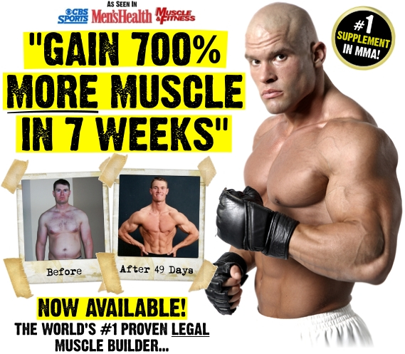
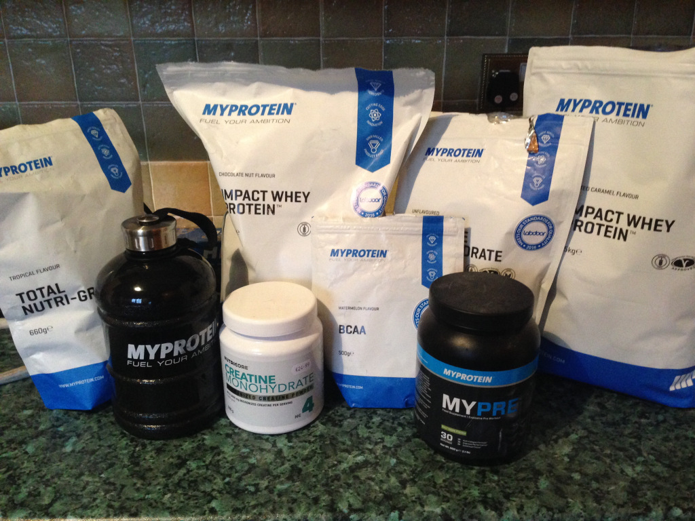

Supplements are considered by many to be essential in accompanying your workout routine. Common questions surrounding supplements often include:
- “Which supplements will help me build muscle?”
- “Which supplements will help me lose fat faster?”
When asked this question, people tend to become discouraged at my response when I promote the consumption of real, whole foods instead of taking supplementation.
The Need to Know about Supplements
For the most part, I find the industry to be full of some very sketchy marketing and outrageous claims. This is due to the supplement industry being largely unregulated, any allegation or ingredients contained do not have to be justified before entering the market.

Despite this, there are situations where having supplements in conjunction with a quality nutritious diet can be beneficial. The challenge is to do your research and identify the fraudulent supplement from those that can enhance your muscle recovery/weight loss to reach your training goals. Independent studies done by companies such as labdoor rate supplement products based on their effectiveness and their quality to give us a more, well-rounded view of products.
Beneficial Supplements
If you have some disposable income and after all this you still feel like you would like to purchase some supplements there is a few I would recommend, such as:
- Protein Powder – Protein is an important part of building muscle (essentially the building blocks you need to generate muscle). If you’re getting enough protein in your diet from whole food sources such as chicken, steak, eggs etc., there is no need for you to also take this supplement. The benefit of the product lies within its convenience.
- Creatine – Creatine is the most researched and commonly used supplement in the world. It increases the amount of water muscles can retain, as a result it helps your muscles work more efficiently. It is a cheap and safe product that naturally occurs in red meats.
- Multivitamin – Multivitamins can be beneficial for someone who has nutritional deficiencies in minerals such as calcium, iron, zinc, magnesium etc. from a lack of eating nutritious, wholesome foods. It is a relatively cheap product that is readily available at most health food stores.

In brief, nothing beats a solid, long term diet and regular physical activity. A “supplement” is to be used exactly how it’s said, to “supplement” a healthy diet, not replace it.